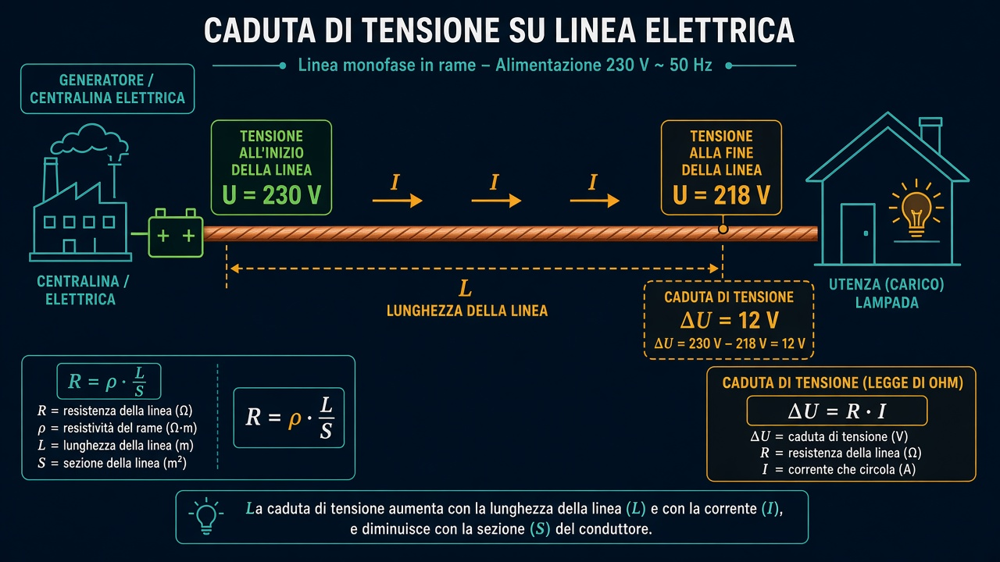

Caduta di tensione lungo una linea
L’idea in breve
La tensione (volt, V) spinge la corrente (ampere, A) nel cavo. Il filo ha una resistenza R: parte di tensione si «consuma» lungo il percorso. Quella perdita si chiama caduta di tensione ΔU (delta U).
All’inizio del cavo la tensione è più alta; verso la fine (lampione, presa, motore) è un po’ più bassa.
Prima legge di Ohm
U = R × I
U in volt, R in ohm (Ω), I in ampere.
ΔU = R × I
ΔU è quanta tensione perdi sul cavo con corrente I.
Seconda legge di Ohm
La resistenza del filo dipende da materiale, lunghezza e sezione:
R = ρ × L / S
ρ (rho) = resistività del materiale (es. rame ≈ 0,0175 Ω·mm²/m).
L = lunghezza del cavo in metri.
S = sezione del filo in mm².
Cavo più lungo → R aumenta → ΔU aumenta.
Sezione più grossa → R diminuisce → ΔU diminuisce.
Simulatore visivo
Muovi i cursori: guarda come cambiano lunghezza, sezione e corrente. Le colonne verde e ambra sono la tensione all’inizio e alla fine del cavo.
Cavo in rame · Usorgente = 230 V
ρ (rame) = 0,0175 Ω·mm²/m · ΔU = R × I
Schema generale (immagine)

Nel film Edison, portare luce lontano con la CC richiedeva impianti vicini al consumo: su linee lunghe la caduta di tensione è un problema reale. Con la CA e i trasformatori si alza o abbassa la tensione e si riduce la perdita su grandi distanze.
Esempio sul quaderno
Cavo in rame: L = 40 m, S = 2,5 mm², I = 16 A. Calcola R e ΔU.
ΔU = R × I = 0,28 × 16 = 4,48 V
Se parti da 230 V, a fine linea restano circa 230 − 4,48 ≈ 225,5 V
Esercizi
Docente: apri «Soluzione» solo per correggere o per stampare con risposte.
1. Cavo in rame (ρ = 0,0175 Ω·mm²/m): L = 25 m, S = 1,5 mm², I = 10 A. Calcola R e ΔU.
Soluzione (docente)
R = 0,0175 × 25 / 1,5 = 0,292 Ω (circa). ΔU = 0,292 × 10 ≈ 2,9 V.2. Vero o falso? «Se raddoppi solo la lunghezza L del cavo (stessi S, I e materiale), la caduta di tensione ΔU raddoppia.»
Soluzione (docente)
Vero. Da R = ρ × L / S segue che R è proporzionale a L; con ΔU = R × I, anche ΔU raddoppia.3. Stessa corrente I = 16 A, stesso rame, L = 30 m. Confronta la caduta: cavo A con S = 2,5 mm² oppure cavo B con S = 4 mm². Quale perde più tensione?
Soluzione (docente)
A: R = 0,0175 × 30 / 2,5 = 0,21 Ω → ΔU = 3,36 V. B: R = 0,0175 × 30 / 4 = 0,131 Ω → ΔU ≈ 2,1 V. Perde più tensione il cavo A (sezione più piccola).Ricorda così
Prima legge: U = R × I → sulla linea ΔU = R × I.
Seconda legge: R = ρ × L / S → cavo lungo e sottile = più caduta.
In impianti veri controlla anche la caduta percentuale (regole CEI): qui ti basta capire il meccanismo.